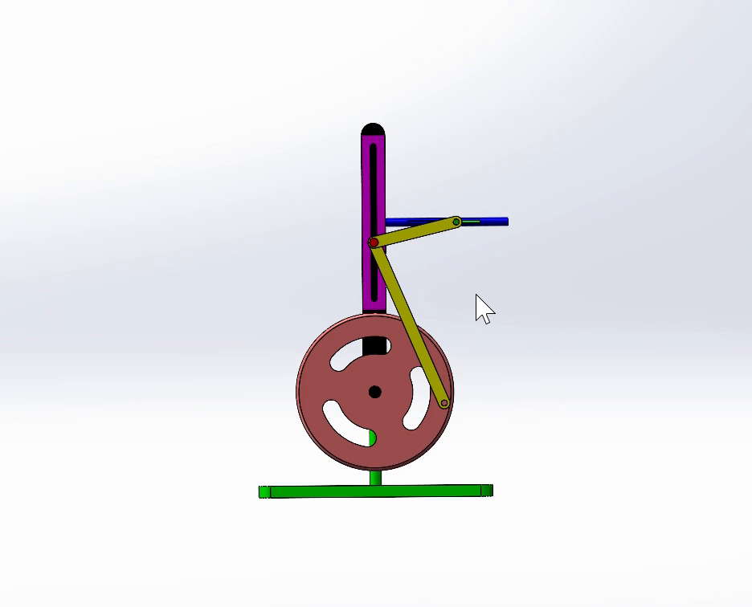
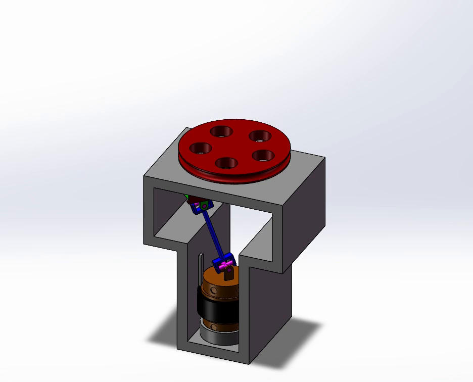
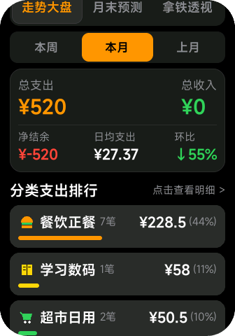

从物理微世界到具身智能，
用真实工程闭环交付每一个想法。
你好，我是 徐凯睿 (LilyCarry)，郑州大学自动化 2026 级新生。 高中因兴趣涉足电子信息技术，高三完成基于 ESP8266 的物理环境采集；高考后集中攻克 STM32 底层控制、双芯总线协同与嘉立创 4 层 PCB 打板闭环。 善于把 AI 作为放大镜与工程加速器，在小米 Vela 手环生态独立完成产品设计、快应用研发与自动发货商业化闭环；并向上游开源项目（水杉输入法、拾光课程表）贡献核心代码。 目前已完成考核飞控板布线与采购，物料明日即达，即刻前往 1123 实验室首件焊接。
飞控板元器件采购送达，计划明日在 1123 实验室上手风枪加热台完成首件贴片调试。
意向方向: 工业测量 & 3D (押宝具身智能的物理空间锚点)
很多人将工业测量看作工厂末端的卡尺打表或静态质检；但站在具身智能（Embodied AI）的战略切口来看，工业测量与 3D 点云配准是智能体干预物理世界的唯一精确度量衡。
多模态大模型解决了语义理解与任务拆解，但它无法凭单目 2D 画面判定轴孔 0.05mm 的装配公差，也无法生成精准的 6D 空间位姿矩阵。缺少精密 3D 度量，机械臂与机器人就只能停留在粗糙的“盲动”。
- • 信号采集与硬件底座：熟练掌握 PCB 原理图布线，理解传感器微弱物理信号的高保真调理、电源滤波与低时延串口总线。
- • 机械与三维几何手感：掌握 SolidWorks 机构零件建模与 STEP 装配干涉校验，对真实机械尺寸与运动学有物理直觉。
- • 决策环境与状态闭环：跑过数万场多智能体天梯对战，深刻体会到高层策略极度依赖底层输入确定性的铁律。
- 1. 3D 点云配准与位姿估计：系统攻坚 PCL 与 OpenCV 深度图处理，掌握点云滤波、ICP 算法与工件 6D Pose 识别。
- 2. 手眼标定与闭环纠偏：攻坚机器人手眼协同矩阵（Eye-in-Hand / Eye-to-Hand），实现亚毫米级的位姿误差动态补偿。
- 3. 工程化试验台落地：协助学长搭建精密测量实机台架，把算法部署在物理硬件上接受真机严苛检验。
自驱探索史：从高三物理感知到双芯协同与机构装配
SmartHome DualCore 双芯控制中枢
针对单片机跑网络协议栈易导致 UI 掉帧和死锁的痛点，设计了 ESP8266 + STM32F103C8T6 双核物理分工架构：
- • ESP8266 协处理器：网络协议栈、和风天气 Gzip 硬件级解压 (Puff算法) 与华为云 IoTDA 影子同步。
- • STM32F103 主控：专职零阻塞 DMA 刷屏 OLED、MPU6050 姿态采集与低功耗休眠。
- • 总线排错：自研 UART DMA + 1024B 环形缓冲区协议，修复 I2C 9脉冲总线锁死。
ESP8266 环境温度监测与同步
高三时期因对真实环境感知的好奇，利用 ESP8266 搭建连续温湿度采集节点。

编写 Python 上位机脚本长期收集温湿度并生成连续折线图，验证了传感器在长期运行下的稳定性。
三维机构建模与装配仿真
掌握三维机械 CAD，独立完成复杂机构装配体建模、运动学配合与运动仿真（实机动画帧截取）：


完成了 STEP 装配体导出与运动学干涉检测，建立对真实机械结构与制造公差的三维直觉。
交付与闭环：开源社区贡献与手环产品商业化
水杉输入法 (MSIME-Windows)
向现代 Windows 平台 C++ 架构输入法项目贡献核心特性：
- • 滚轮翻页交互： 在 Server 候选窗服务精准拦截并分发鼠标滚轮事件，实现流畅的候选字平滑翻页（Fixes #81）。
- • MSVC 编码报错排查： 解决 Windows MSVC 编译器在默认 GBK 代码页下编译 UTF-8 源码导致的跨平台报错。
拾光课程表 · 郑大教务协议适配
为开源课程表独立逆向梳理郑州大学新版树维教务系统完整的 4 步网络协议链：
适配脚本已正式合入主仓库，持续服务全校师生课表一键同步。
小米手环生态商业化产品矩阵
借助 AI 摸高，独立完成小米 Vela OS 快应用与伴生 Android App 开发，跑通完整商业变现闭环：



主打产品《闪电记账本》与《环间驾考》，自研 Python 自动化发货守护进程（`afdian_server.py` + 激活码引擎），累计营收 1000+ 元且每日持续进账。
飞控考核板：4层板布线闭环与首件实装准备


从原理图、DRC 规则到物料采购：极速跑通硬件闭环
在接到学长布置的飞控板绘制任务后，迅速攻坚完成全套打板工程：
- 1. 电源与走线强化： 5V 主电源线路加粗至 25mil 保证过流能力，3.3V 经 LDO 输出处采用大面积铺铜散热，外层走线距板边预留 3 个线宽安全间距。
- 2. 丝印与手工装配友好： 所有排母明确标注正负极与引脚编号 (A8/A9/BOOT)，电容封装优选 0805，降低手工贴片焊接虚焊概率。
- 3. 明日攻坚计划： 物料到货后，立即前往 1123 实验室，使用热风枪与焊台进行首件焊接，随后开始 STM32 底层舵机 PWM 与串口通信联调。
客观能力看板与边界清单
- • EDA 全流程：立创专业版原理图、封装库匹配、PCB 布局与打板。
- • 机械机构建模：SolidWorks 零件建模与装配体运动仿真。
- • AI 敏捷开发流：借助 AI 工具流高效开发完整手环快应用生态。
- • 模块重构：看懂开源拓扑并根据尺寸约束（50×40mm）重画走线。
- • 开源贡献：看懂工业级 C++ 工程并精准切入增加功能与修 Bug。
- • 跨芯片通信：跑通 ESP8266 与 STM32 的串口收发与协议解析。
- • 贴片焊接与调试：进实验室上手热风枪、加热台与贴片调试。
- • 底层外设精细控制：STM32 定时器互补 PWM 与复杂中断状态机。
- • 示波器波形分析：电源纹波抓取与信号完整性排错。
- • 3D 视觉与点云配准：深入学习 PCL / 深度相机标定与位姿算法。
- • 具身闭环控制：手眼协同矩阵与精密力-位控制闭环。
- • 脱离玩具级探索：在真实科研与竞赛课题牵引下解决工业真问题。
# 本地已核实真实 Git 提交日志：
$ git log -n 2 --oneline metasequoiaime/MSIME-Windows
0fb80010 feat(server): support mouse wheel paging on candidate window (fixes #81)
$ git log -n 2 --oneline XingHeYuZhuan/shiguang_warehouse
154c578 refactor(zzu): remove redundant debug logic and streamline flow
f853754 feat(zzu): support new Supwisdom educational administration JSON pipeline
$ git log -n 2 --oneline LilyCarry/SmartHome_DualCore
a3ad50b feat(stm32): add screen-off sleep mode, 30s inactivity timer, night-time auto sleep
5be839a fix(stm32): eliminate 30s OLED freeze & I2C bus lockup with zero-blocking DMA pipeline
# 飞控工程状态：ProPrj_飞控_2026-09-29.epro2 (DRC Passed, BOM In-Transit, Solder Ready)
[VERIFIED] 真实工程全部在线上及本地归档，接受随时代码评审与实物检查。